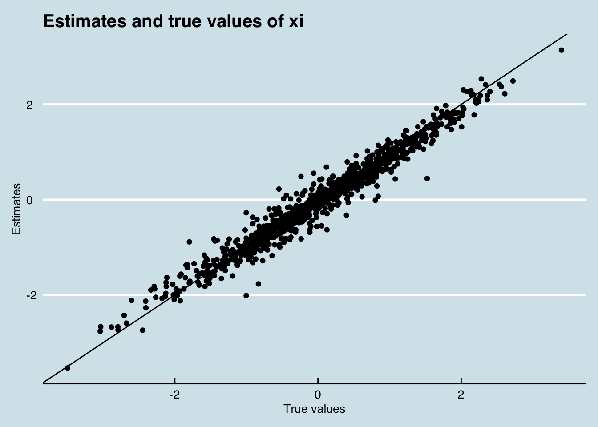

Session 4 Aggregate random coefficients logit: Bayesian estimation using Stan
This session illustrates how to fit aggregate random coefficient logit models in Stan, using generative/Bayesian techniques. It’s far easier to learn and implement than the BLP algorithm, and has the benefits of being robust to mismeasurement of market shares, and giving limited-sample posterior uncertainty of all parameters (and demand shocks). This comes at the cost of an additional assumption: we employ a parametric model of how unobserved product-market demand shocks affect prices, thereby explicitly modeling the endogeneity between prices and observed consumer choices, whose biasing effect on estimates, classical BLP uses instrumental variables to resolve. Specifying the full generative model, therefore, instrumental variables are not strictly needed (though they can certainly still be incorporated).
4.1 A generative model of consumer choice
We base our estimation in the standard aggregate random coefficients logit model used in BLP. In this model, customer \(i\) in market \(t\) has preferences over product \(j\) such that their total utility is
\[ V_{ijt} = u_{ijt} + \epsilon_{ijt} \mbox{ where } \epsilon_{ij t} \sim \mbox{Gumbel}(.) \]
\[ u_{ijt} = \alpha_{i}p_{jt} + X_{jt}\beta_{i} + \xi_{jt} \]
This says that each consumer receives utility, \(u_{ijt}\), from good \(j\) according to its price, \(p_{jt}\), its characteristics, \(X_{jt}\), some systematic “demand” or “quality” shock applicable to all customers in market \(t\), \(\xi_{jt}\), and some iid Gumbel shock, \(\epsilon_{ijt}\). Note that the coefficients \(\alpha_{i}\) and \(\beta_{i}\) are individual specific (and so are individual random effects).
Under the above assumptions, the probability that an individual will purchase good \(j\) (as in Train (2003)) is given by:
\[ p(u_{ijt}=\max(u_{it})) = \frac{\exp(\alpha_{i}p_{jt} + X_{jt}\beta_{i} + \xi_{jt})}{1 + \sum_{j}\exp(\alpha_{i}p_{jt} + X_{jt}\beta_{i} + \xi_{jt})} \]
Where the denominator includes the expected value of the utility of the outside good \(1 = \exp(\mbox{E}[u_{0}])\).
4.1.1 Generating aggregate sales data from the model
To close the model, we need to connect the probability of an individual’s purchasing choice with each good’s market share. Classical BLP uses GMM to match empirical market shares observed in the data to the average probabilities of each good’s being purchased (integrated with respect to the random coefficient distribution).
This approach induces measurement error when markets vary in size, however. A market share computed from 100,000 sales across 5 goods is different in distribution from a market share computed from 1,000 or 100 sales. To account for this, we make the assumption that true market shares \(s_{jt}\) map to observed sales (which are observed with error) through a multinomial distribution with a given market size.
\[ y_{jt} \sim \mbox{Multinomial}(s_{jt}, \mbox{Market size}_{t}) \]
4.1.2 Modeling price
A second major difference between our model and other approaches is to model the demand shock \(\xi_{jt}\) as an explicit random variable, about which we want to perform inference. The approach we take is to model it as a latent factor, whose value is revealed partly in utilities (and market shares), and partly in prices or any other endogenous product characteristics.
Petrin and Train (2010) propose a similar control function approach and show how it can substitute for IVs, but it seems not to have caught on in the literature. In the Bayesian framework, however, it seems to make particularly good sense.
To do this in a parametric way, we make the assumption that prices come from a truncated normal distribution, which gives positive weight to non-negative prices. If we suspect the relationship between \(X\), \(\xi\) and prices to not be linear, we could use more flexible semi-parametric or non-parametric models. Or we could propose a structural model for the expected value of price, with pricing errors having a parametric distribution.
\[ p_{jt} \sim \mbox{Normal}_{+}(X_{jt}\gamma + \lambda \xi_{jt}, \sigma_{p}) \]
Here, \(\lambda\) is a factor loading on \(\xi_{jt}\). We’ve used a truncated distribution because it places no weight on negative prices. Using this specification, \(\xi_{jt}\) will be correlated with \(p_{jt}\) in the utility model.
Note that if we have instruments for price, they could easily be included in this model, but they are not strictly necessary as the (linear) endogeneity of prices on the demand shock is accounted for in the model.
4.1.3 Estimating the model from aggregate market-level data
At a high level, the trick to estimating this model is to estimate the the distribution of the individual-level coefficients, rather than the actual individual-level coefficients (which we obviously cannot estimate from aggregate data). We do this by reformulating the utility model in terms of fixed and random utility, and passing in the individual random effects \(z_{i}\) as data.
First, express utility in terms of a fixed and random portion:
\[ \mbox{E}[u_{ijt}] = \alpha p_{jt} + X_{jt}\beta + (p_{jt},\, X_{jt}')\, L\, z_{i}' + \xi_{jt} \]
\(z_{i}\) is a row vector of \(P+1\) independent draws from some distribution, normally a unit normal, and \(L\) is the lower triangular Cholesky factorization of \(\Sigma\), which is a \(P+1 \times P+1\) covariance matrix. To be clear, \(\Sigma\) is the covariance matrix of variations in \((\alpha_{i},\, \beta_{i}')\) across customers. If the element of \(\Sigma\) corresponding to price and product characteristic 3 is negative, it means that customers who are more less sensitive to price (assuming all are negative, those whose \(\alpha_{i}\)s are closer to 0) tend to derive less utility from characteristic 3. Good estimates of \(\Sigma\) are what give us good estimates of the distribution of preferences, which is what we ultimately want.
Note that if we have information about how markets differ from one another (for instance their demographics), we could include that information in the random effects part of the model.
Given this structure, we can estimate the structural parameters (and demand shocks) using the following method:
- Draw a \(NS \times P+1\) matrix independent shocks \(z_{t}\), for some large number \(NS\). We normally use the same shocks for every market.
- For a given draw of the structural parameters \(\alpha,\, \beta,\, \xi_{jt}, \Sigma\), for each market for each \(i\in 1:NS\) calculate \(\mbox{E}[u_{ijt}]\) and hence \(p(u_{ijt}=\max(u_{it}))\).
- Aggregate individual probabilities into predicted market shares \(s_{jt,\mathrm{pred}}\)
- Model \(y_{t}\) and \(p_{t}\) as described above.
Steps 2 and 3 occur in every iteration (or, if you are using HMC, every leapfrog step) of your model estimation.
4.2 Part 2: Fake data simulation
Astute readers will be aware that we always recommend simulating fake data with known parameters for a model. Here we do precisely that. All fake data simulation is in R. The comments should describe what’s going on here.
library(ggplot2); library(dplyr)
set.seed(5)
# Dimensions of the data.
NS <- 500 # 500 fake customers in each market
J <- 50 # 50 products
T <- 20 # 20 markets
P <- 3 # 3 covariates
# structural parameters
alpha <- -1.5
lambda <- .8
beta <- rnorm(P)
# Create a covariance matrix of the individual-level parameters
scales <- seq(from = .5, to = .9, length.out = P+1)
# Generate a random correlation matrix
XX <- matrix(rnorm(4*6), 6, 4)
Omega <- cor(XX)
Sigma <- diag(scales) %*% Omega %*% diag(scales)
# Product characteristics matrix
X <- matrix(rnorm(J*P), J, P)
# Easier to use if we repeat it for each market. We can have different
# characteristics (like advertising) in each market
X_long <- do.call(rbind, replicate(T, X, simplify = F))
# structural shocks and price
xi <- rnorm(T*J, 0, 1)
xi_mat <- matrix(xi, T, J, byrow = T)
gamma <- rnorm(P)
gamma0 <- 3
P2 <- 3 # number of instruments
gamma2 <- rnorm(P2)
Z <- matrix(rnorm(P2*J*T), J*T, P2)
# The generative model for price
price <- truncnorm::rtruncnorm(T*J, a = 0, mean = gamma0 + lambda*xi + X_long %*% gamma, sd = .5)
price_mat <- matrix(price, T, J, byrow = T)
# Market size
market_size <- rpois(T, 30000)
# Deltas (the fixed part of utility for each product)
delta <- alpha*price + X_long %*% beta + xi
delta_mat <- matrix(delta[,1], T, J, byrow = T)
# random shocks. (alpha_shocks, beta_shocks) = z_t for generation
z <- matrix(rnorm(NS*(P+1)), NS, P+1)
# Empty market shares. Mat is for the observed products; sales is for all goods including the outside good
shares_mat <- matrix(NA, T, J)
sales <- matrix(NA, T, J+1)
# Loop through each matrix and generate sales for each product
for(i in 1:T) {
# Latent utility matrix
utility <- matrix(NA, NS, J)
# Create the random component of the (alpha, beta) vector
random_effects <- z %*% chol(Sigma)
# monte carlo integration
for(n in 1:NS){
utility[n,] <-t( exp(delta_mat[i,] + cbind(price_mat[i,], X) %*% random_effects[n,]))
utility[n,] <- utility[n,]/(1 + sum(utility[n,]))
}
shares_mat[i,] <- colMeans(utility)
# Now we're going to observe the shares with measurement error
# Last column is the outside good
sales[i,] <- rmultinom(1, market_size[i], c(shares_mat[i,], 1 - sum( shares_mat[i,])))
}It should be pointed out that here \(\xi_{jt}\) and \(p\) are correlated. This should introduce endogeneity problems in the model.

4.3 Part 3: Writing out the model in Stan
Below we implement the model described above in Stan.
A couple of things to look out for in the code:
- We pass \(z_{t}\) in as two sets of shocks, one for \(\alpha\) and one for \(\beta\). There’s no good reason for this.
- We stack \(X\), a \(J\times P\) characteristic matrix, \(T\) times. In the DGP above, we assume that a product has the same characteristics in each market. In reality, we would assume that things like advertising would vary across markets.
- Although we simulate the price above with instruments, below we don’t use the instruments at all for estimation of the model.
// our Stan model, saved as vsb.stan
// first we define the function that takes data and parameters and returns predicted market shares
functions {
// calculates shares for a given market
row_vector shares(real alpha, vector beta, matrix bigX, matrix Sigma, row_vector xi, matrix z) {
matrix[rows(z), cols(xi)+1] utilities;
matrix[rows(z), cols(xi)+1] probs;
row_vector[cols(xi)+1] shares;
// 1. Rather than pass in p and x separately, we'll pass in bigX = append_col(p, X)
// 2. append alpha_shock, beta_shock
{
matrix[rows(z), cols(xi)] tmp;
tmp = rep_matrix((bigX*append_row(alpha, beta) + xi')', rows(z));
// replace the append_col wing single values (might speed things up)
utilities[1:rows(z), 1:cols(xi)] = tmp + z * cholesky_decompose(Sigma)' * bigX';
utilities[1:rows(z),cols(utilities)] = rep_vector(0.0, rows(z));
for(i in 1:rows(z)) {
probs[i] = softmax(utilities[i]')';
}
}
for(j in 1:cols(probs)) {
shares[j] = mean(col(probs, j));
}
return(shares);
}
}
// next define our data
data {
int NS; // number of individuals in integration
int J; // number of products
int T; // number of markets
int P; // number of features
matrix[NS, P+1] z; // normal(0,1) draws of the shocks
matrix[T, J] price; // price for each unit
int sales[T, J+1]; // unit sales across T markets for J+1 products (inc outside good)
matrix[T*J, P] X_repeat; // T Xs stacked on top of each other. This format allows characteristics to vary across markets.
real nu;
}
// next join the product data together into single matrices
transformed data {
matrix[T*J, P+1] bigX;
bigX = append_col(to_vector(price'), X_repeat);
}
// define parameters
parameters {
real alpha;
vector[P] beta;
vector[P] gamma;
real gamma0;
real<lower = 0> price_scale;
matrix[T, J] xi;
vector<lower = 0>[P+1] scales;
corr_matrix[P+1] Omega;
real<lower = 0> lambda;
}
transformed parameters {
cov_matrix[P+1] Sigma;
Sigma = quad_form_diag(Omega, scales);
}
// and the model
model {
// priors
alpha ~ normal(0, 1);
beta ~ normal(0, 1);
gamma0 ~ normal(0, 3);
gamma ~ normal(0, 3);
price_scale ~ normal(0, 1);
lambda ~ normal(0, 1);
to_vector(xi) ~ normal(0, 1);
scales ~ normal(0, 1);
Omega ~ lkj_corr(nu);
// model of price -- this helps pin down xi
for (i in 1:rows(to_vector(price'))) {
to_vector(price')[i] ~ normal(gamma0 + X_repeat[i] * gamma + lambda * to_vector(xi')[i], price_scale) T[0,];
}
// model of sales
{
matrix[T, J+1] pred_shares;
for(t in 1:T) {
// predicted market shares given data and parameters
pred_shares[t] = shares(alpha, beta, bigX[(t*J-J+1):(t*J)], Sigma, xi[t], z);
// sales are measured with multinomial measurement error
sales[t] ~ multinomial(pred_shares[t]');
}
}
}
# run model ---------------------------------------------------------------
# Compile Stan function to check that it generates sensible shares
library(rstan)
options(mc.cores = parallel::detectCores())
data_list <- list(NS = nrow(z),
J = J,
T = T,
P = P,
z = z,
price = price_mat,
sales = sales,
X_repeat = X_long,
nu = 3)
# Compile the model
compiled_model <- stan_model("vsb.stan")
# For the sake of time, we estimate this using optimization
test_optim <- optimizing(compiled_model, data = data_list)Now how did the model go at recapturing known demand shocks?

And how about the structural parameters?
Omegas <- test_optim$par[grepl("Omega", names(test_optim$par))]
Scales <- test_optim$par[grepl("^scale", names(test_optim$par))]
pars <- c(test_optim$par[1:(P+1)], Omegas, Scales)
true_values <- c(alpha, beta, as.vector(Omega), scales)
data_frame(Estimates = pars,
`True values` = true_values,
Parameter = c("alpha", rep("beta", P), rep("Omega", (P+1)^2), rep("scale", P+1) )) %>%
ggplot(aes(x = `True values`, y = Estimates)) +
geom_point(aes(colour = Parameter)) +
geom_abline(aes(intercept = 0, slope = 1)) +
theme_economist() +
labs(title = "Estimates and true values\nof structural parameters")
Voila!.
4.4 Conclusion
What we’ve done above is shown that it can be extremely simple to express a random coefficients logit model with measurement error using a latent factor approach, and importantly, without any instruments. This is a pretty radical departure from the most popular methods in the literature.
The other big advantage is that, given you have enough computation time, the model can be estimated using Bayesian techniques. In the code above, we could do this by using sampling() rather than optimizing. With the current code, this is quite slow, but does generate robust parameter estimates. If your decision problem requires genuine estimates of uncertainty around the structural parameters, I’d recommend experimenting using optimization, and then using HMC (sampling) for the production run of the model. In my experiments, I’ve found they generate similar point-estimates.
Meager, Rachael. 2016. “Aggregating Distributional Treatment Effects: A Bayesian Hierarchical Analysis of the Microcredit Literature.”
Rubin, D. 1981. “Estimation in Parallel Randomized Experiments.” Journal of Education Statistics 6. American Educational Research Association; American Statistical Association: 377–401.